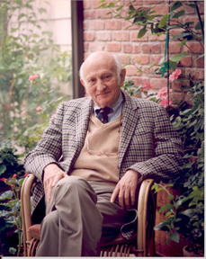

John Cocke
Iemand waarmee Frances Allen veel samengewerkt heeft, vooral aan het begin van haar carrière, is John Cocke. Hij was een Amerikaanse informaticus. Hij werd geboren op 30 mei 1925 in de Verenigde Staten en stierf op 16 juli 2002. John Cocke heeft ook een Turing award gewonnen in 1987. Hij ontving de award voor zijn bijdrage aan de RISC-architectuur voor processors. RISC staat voor Reduced Instruction Set Computer.